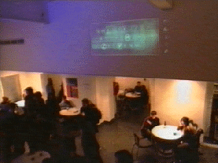

|
News |
|
AudioRom and the SCHOOL OF SOUND A unique event exploring the art of sound with the moving image 16th to 19th April LOVEBYTES SHEFIELD UK INSTALLATION-CONFERENCE 23rd-25th April FUSE SAN FRACISCO INSTALLATION 27th-29th May ISEA MANCHESTER TOMORROWS HOMES TODAY INSTALLATION 21st May till September SONAR BARCELONA SPAIN TBA 18th-20th June POP.KOMM KOELN GERMANY TBA 13th-16th August CREAM LIVERPOOL UK PERFORMANCE INSTALLATIONS 4th-11th September ISEA LIVERPOOL MANCHESTER SITE SPECIFIC 4th-11th September the enhanced CD "Interactive Music" by AudioRom will be available in the shops from the end of February. To reserve your copy please go to our order page. The innovative new Enhanced CD-Rom from AudioRom delves into a new realm of music creation, game play and visual representation. The rom contains 13 different musical toys which allow the user to intuitivly explore the audio tracks.
Graphic Design by Neville Brody's research Studios Special Guest Tracks by T-Power AudioRom is published by Laboratory |
The AudioRom preview at the ICA on Monday the 2nd of Feb was a complete success if I may say so. We got everybody hideously drunk on our free wine and old friends met again....  |
||